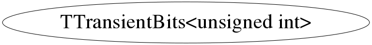

class TTransientBits<unsigned int>
\class TTransientBits Class for storing bits for transient data members
Function Members (Methods)
public:
| ~TTransientBits<unsigned int>() | |
| void | Clear() |
| void | ClearBit(unsigned int f) |
| TTransientBits<unsigned int>& | operator=(const unsigned int& rhs) |
| TTransientBits<unsigned int>& | operator=(const TTransientBits<unsigned int>&) |
| void | Print() const |
| void | SetBit(unsigned int f) |
| void | SetBit(unsigned int f, Bool_t flag) |
| Bool_t | TestBit(unsigned int f) const |
| unsigned int | TestBits(unsigned int f) const |
| TTransientBits<unsigned int>() | |
| TTransientBits<unsigned int>(const unsigned int& tmp) | |
| TTransientBits<unsigned int>(const TTransientBits<unsigned int>&) | |
| unsigned int | Value() const |
Class Charts



Function documentation
TTransientBits& operator=(const T& rhs)